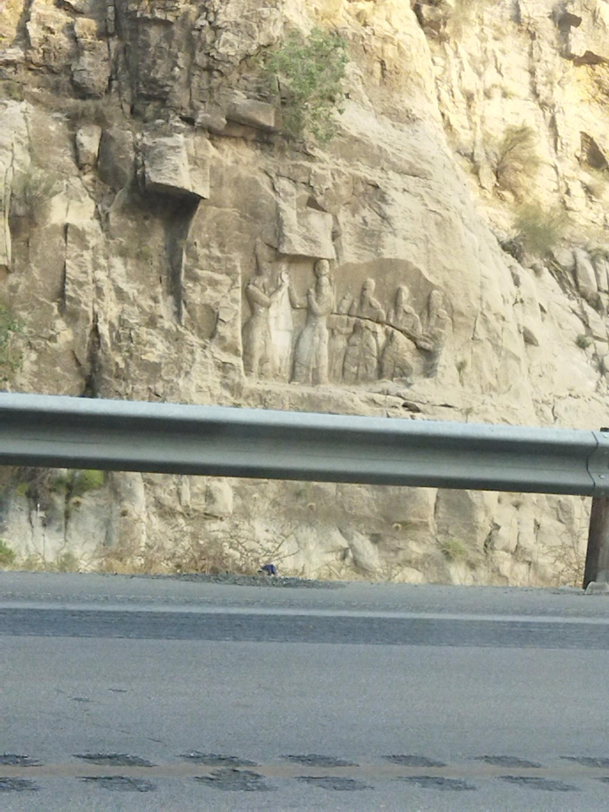
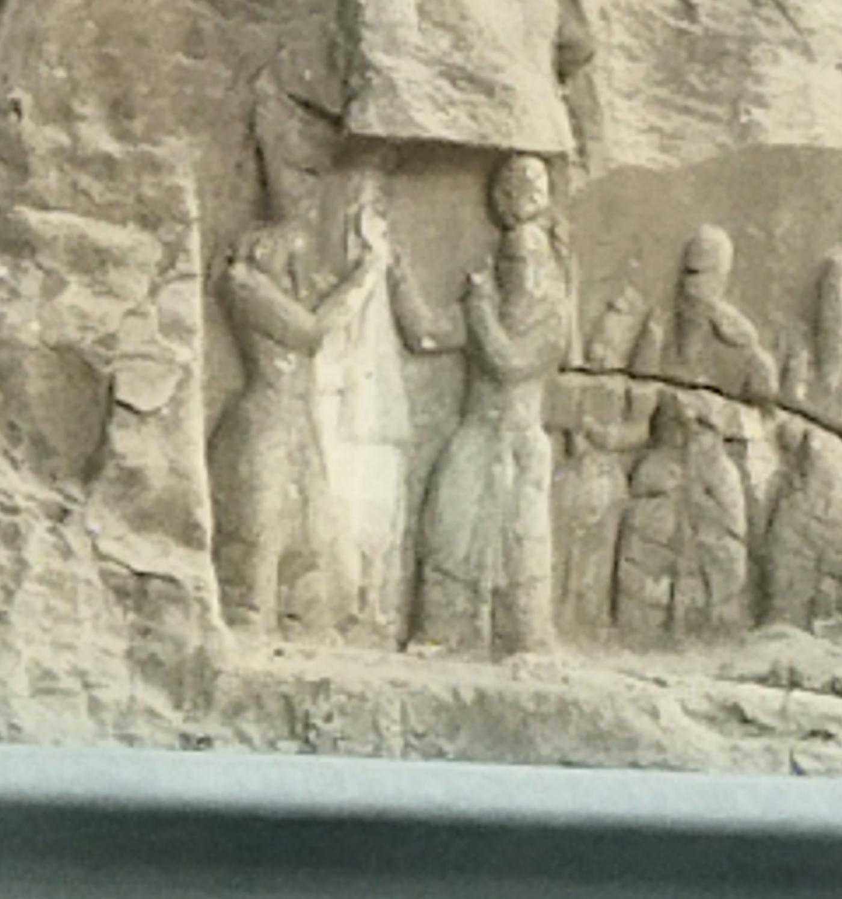

THE BASICSWhat You're Actually Looking At
This carving is officially known as the Investiture of Ardashir I, though locals and guidebooks often just call it one of the "Do Naqsh-e Barjaste" — the "Two Reliefs" of Tang-ab, since a second, even larger relief depicting a cavalry battle sits about 2 kilometers further along the same cliff line. Both were carved by order of Ardashir I, the founder of the Sasanian Empire, sometime in the early-to-mid 3rd century CE.
The scene shows two central, near-life-size figures facing each other: on one side, Ardashir I himself, and on the other, the Zoroastrian god Ahura Mazda, extending a beribboned ring — the symbol of legitimate kingship — toward him. Behind Ardashir stand smaller carved attendants, widely identified as his son and heir Shapur I along with members of the royal court, positioned at a smaller scale to emphasize the hierarchy of the scene.
THE BACKSTORYWhy This Carving Exists At All
To understand why a king would spend enormous resources carving a permanent portrait of his own coronation into a cliff face, you have to understand how precarious his claim to power actually was. Ardashir I began his career as a regional ruler in Fars province — the very province this relief sits in — as a vassal under the Parthian Arsacid dynasty that had ruled Iran for roughly four centuries.
Around 224 CE, Ardashir led a rebellion against his Parthian overlord, Artabanus V, and defeated him decisively at the Battle of Hormozdgan. That victory ended the Parthian Empire outright and installed Ardashir as the founder of an entirely new dynasty: the Sasanians, who would go on to rule Persia for the next four centuries, right up until the Islamic conquest.
A usurper who topples an empire has an obvious problem: legitimacy. Ardashir solved his with propaganda carved directly into the landscape of his home province — a permanent, unmistakable claim that his crown wasn't stolen from a man, but granted directly by a god.
The message wasn't subtle, and it wasn't meant to be: any successor, rival, or traveler passing through Tang-ab would see, in stone, that Ardashir's throne came from Ahura Mazda himself — not from the sword alone.

THE ICONOGRAPHYReading the Relief Like a Historian
Sasanian investiture reliefs follow a strict visual grammar, and this one is one of the earliest examples the dynasty ever produced — meaning later, more famous reliefs (like the ones at Naqsh-e Rostam near Persepolis) were directly modeled on the composition established right here at Tang-ab.
Both central figures stand at matching height, a deliberate choice signaling equivalence between the divine and royal spheres — Ardashir is not shown kneeling or subordinate, but as Ahura Mazda's chosen equal in rank on Earth. The ring extended between them is the key symbol: in Zoroastrian and Persian royal tradition, it represents the "farr," a kind of divine royal glory or mandate that could be granted or withdrawn by the gods themselves.
The smaller figures carved to the right — worn down significantly more than the central pair after nearly two millennia of desert sun and flash floods through the gorge — are generally read as Shapur I and additional court or priestly figures, included at reduced scale purely to reinforce the hierarchy: gods and kings large, everyone else smaller.
THE NEIGHBORThe Second Relief, 2 Kilometers Away
Investiture Relief vs. Battle Relief — Tang-ab's "Two Reliefs"
Two kilometers further down the same gorge sits the second and far larger carving — an 18-meter-long battle scene showing Ardashir unseating Artabanus V in single combat, with cavalry clashing on either side. At roughly 4 meters tall and 18 meters wide, it's considered the largest surviving Sasanian rock relief in Iran. Together, the two carvings tell a complete political narrative in stone: first the war is won (the battle relief), then the throne is legitimized by heaven (the investiture relief you're reading about here).
Most visitors only stop for one or the other because both sit right off the highway with minimal signage — if you're making the trip, it's worth building in time for both, since they were clearly designed as a matched pair telling one continuous story.
VISITINGHow to Actually Get There
The relief sits directly beside the Shiraz–Firuzabad road (Route 65), roughly 3 kilometers before entering the town of Firuzabad, on the cliff face above the Tang-ab river — you'll spot a guardrail and a pull-off area on the roadside almost exactly where the carving is visible above, as in the photos on this page. It's unstaffed and free to view from the roadside; a short scramble gets you closer for photos, though the carving itself sits well above ground level and isn't climbable.
If you're already heading to Firuzabad, it's worth combining this stop with Ardashir's Palace and the circular ancient city of Gur nearby — the whole area functions as an open-air museum of the very first years of the Sasanian Empire, almost entirely uncrowded compared to Persepolis a couple hours north.
WHY IT MATTERSThe Bigger Picture
It's easy to drive past a worn carving on a cliff and assume it's a minor curiosity. This one isn't. As one of the very first Sasanian rock reliefs ever carved, it set the visual template — the confronted standing figures, the ring of kingship, the scaled hierarchy — that the entire dynasty would keep reusing for the next 400 years, all the way through the far more famous reliefs at Naqsh-e Rostam and Naqsh-e Rajab. In a real sense, the visual language of Persian royal art as most people picture it today starts right here, on this one cliff, above this one river.
We're documenting Iran's overlooked ancient sites
This relief, Persepolis, and the rest of Fars Province's Sasanian and Achaemenid heritage are part of an ongoing series we're filming on the ground. Subscribe to follow along, and check Instagram for the footage that doesn't make the final cut.
Watch on YouTube →